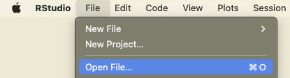

library(readr)
# csv and various other separators
data <- read_delim(file, sep = ",")
data <- read_delim(file, sep = "|")
data <- read_delim(file, sep = ";")
# txt (space separated values)
data <- read_delim(file, sep = " ")
# tsv (tab separated values)
data <- read_delim(file, sep = "\t")Data Import and preparation
How to import different dataformats in python and R.
Importing in R
TXT, CSV, TSV
For the import of data from txt, csv or tsv formats we will use the read_delim() function from the readr package. The main difference between these data formats resides in the separator of the data. For txt data, this is often undefined and needs to be specified by the user. The main arguments of the read_delim() are the file and the separator. The separator is the character string that defines where a line should be cut. For example, if our raw data looks like this:
Year;Class;Value
2002;B60C;42
2003;B29K;21
2009;C08K;12
Then we see that each column is separated by a “;”. By splitting the data whenever there is a “;” we create the following dataframe:
| Year | Class | Value |
|---|---|---|
| 2002 | B60C | 42 |
| 2003 | B29K | 21 |
| 2009 | C08K | 12 |
Seperators that we commonly find in data are the semicolon: “;”, the comma: “,”, the vertical bar (or pipe) “|”, the space **” “, and tabs which are coded with**”\t”.
Pay Attention
Even though csv stands for Comma Separated Values, this does not mean that the separator is always a comma, often enough it is in fact a semicolon. Always check your data to make sure you have the right one.
XLS, XLSX
Excel files can also easily be importanted into R with the the readxl package.
library(readxl)
read_excel("sample_data.xlsx")# A tibble: 5 × 3
Pat_num Year Domain
<chr> <dbl> <chr>
1 WO200214562 2002 B60C
2 WO2023738962 2023 B60C
3 EP2023778962 2023 B29D
4 FR2019272698 2019 C08K
5 FR201922671 2019 C08K rdata

# use import function in rstudio, or double clickBib
.bib files are a popular bibliographic data format. This data can be imported and transformed into a dataframe using the bibliometrix package.
library(bibliometrix)
convert2df(file, dbsource = "scopus", format = "bibtex")
Pay Attention
The bibliometrix package is designed for bibliometic analysis, it might change the names of the columns and the format of some of the data to adjust to what it is supped to do.
json
library(jsonlite)
# Specify the path to the JSON file
json_file <- "example_1.json"
# Import the JSON file
data <- fromJSON(json_file)
# Display the imported JSON data
print(data)$fruit
[1] "Apple"
$size
[1] "Large"
$color
[1] "Red"jsonl
jsonl files are a list of json files. We find this format for exampl in the lens.org database. Since each row is a json, we first read the files as text files and then apply the fromJSON function to extract the information. The result is a list of data objects.
library(jsonlite)
tmp<-readLines("data_test.jsonl")Warning in readLines("data_test.jsonl"): incomplete final line found on
'data_test.jsonl'tmp <- lapply(tmp, jsonlite::fromJSON)Click here to see output
print(tmp)[[1]]
[[1]]$lens_id
[1] "000-136-263-451-165"
[[1]]$title
[1] "The influence of displaced femoral neck fractures on the surgical incision for hemiarthroplasty using the Hardinge approach"
[[1]]$publication_type
[1] "journal article"
[[1]]$year_published
[1] 2002
[[1]]$date_published_parts
[1] 2002 1
[[1]]$created
[1] "2018-05-12T00:07:16.368000+00:00"
[[1]]$external_ids
type value
1 magid 2083116342
2 doi 10.1007/bf03170381
[[1]]$authors
first_name last_name initials ids
1 M. Yousef M magid, 2518579655
2 E. Masterson E magid, 2607514729
affiliations
1 Mid-Western Regional Hospital, Department of Orthopaedic Surgery, Mid-Western Regional Hospital, Limerick, Ireland., magid, grid, ror, 2799956115, grid.415964.b, 00r5kgd36, grid.415964.b, IE
2 Mid-Western Regional Hospital, Department of Orthopaedic Surgery, Mid-Western Regional Hospital, Limerick, Ireland., magid, grid, ror, 2799956115, grid.415964.b, 00r5kgd36, grid.415964.b, IE
[[1]]$source
[[1]]$source$title
[1] "Irish Journal of Medical Science"
[[1]]$source$type
[1] "Journal"
[[1]]$source$publisher
[1] "Springer Science and Business Media LLC"
[[1]]$source$issn
type value
1 print 00211265
2 electronic 18634362
3 print 03321029
4 print 0790231x
5 print 07902328
[[1]]$source$country
[1] "Ireland"
[[1]]$source$asjc_codes
[1] "2700"
[[1]]$source$asjc_subjects
[1] "General Medicine"
[[1]]$fields_of_study
[1] "Surgery" "Surgical incision" "Hardinge approach"
[4] "Femoral Neck Fractures" "Medicine"
[[1]]$volume
[1] "171"
[[1]]$issue
[1] "1"
[[1]]$languages
[1] "en"
[[1]]$source_urls
type url
1 html https://link.springer.com/article/10.1007/BF03170381
2 <NA> https://link.springer.com/content/pdf/10.1007/BF03170381.pdf
[[1]]$start_page
[1] "31"
[[1]]$end_page
[1] "31"
[[1]]$author_count
[1] 2
[[2]]
[[2]]$lens_id
[1] "000-150-493-965-760"
[[2]]$title
[1] "Peroxidase activity in soybeans following inoculation with Phytophthora sojae."
[[2]]$publication_type
[1] "journal article"
[[2]]$year_published
[1] 2006
[[2]]$date_published_parts
[1] 2006 1
[[2]]$created
[1] "2018-05-12T03:57:41.820000+00:00"
[[2]]$external_ids
type value
1 doi 10.1007/s11046-005-0721-y
2 pmid 16389483
3 magid 2006874664
[[2]]$authors
first_name last_name initials ids
1 Jose C. Melgar JC magid, 2634470543
2 Thomas S. Abney TS magid, 2677788953
3 Richard A. Vierling RA magid, 1981461697
affiliations
1 Purdue University, Botany and Plant Pathology Department, Purdue University, West Lafayette, IN 47907, USA., magid, grid, fundref, wikidata, ror, 219193219, grid.169077.e, 100006377, q217741, 02dqehb95, grid.169077.e, US
2 United States Department of Agriculture, Agricultural Research Service, Crop Production and Pathology Unit, Agricultural Research Service, U.S. Department of Agriculture, West Lafayette, USA, Crop Production and Pathology Unit, Agricultural Research Service, U.S. Department of Agriculture, West Lafayette, USA, magid, grid, fundref, ror, 1336096307, grid.417548.b, 100000199, 01na82s61, grid, fundref, ror, grid.463419.d, 100007917, 02d2m2044, grid.417548.b, grid.463419.d, US, US
3 Purdue University, Botany & Plant Pathology Department and Agronomy Department, Purdue University, West Lafayette, USA, magid, grid, fundref, wikidata, ror, 219193219, grid.169077.e, 100006377, q217741, 02dqehb95, grid.169077.e, US
[[2]]$source
[[2]]$source$title
[1] "Mycopathologia"
[[2]]$source$type
[1] "Journal"
[[2]]$source$publisher
[1] "Springer Science and Business Media LLC"
[[2]]$source$issn
type value
1 print 0301486x
2 electronic 15730832
[[2]]$source$country
[1] "Netherlands"
[[2]]$source$asjc_codes
[1] "2404" "2402" "1110" "1102" "3401"
[[2]]$source$asjc_subjects
[1] "Agronomy and Crop Science"
[2] "Applied Microbiology and Biotechnology"
[3] "Microbiology"
[4] "Plant Science"
[5] "Veterinary (miscalleneous)"
[6] "Veterinary (miscellaneous)"
[[2]]$fields_of_study
[1] "Gene" "Horticulture" "Peroxidase"
[4] "Inoculation" "Phytophthora sojae" "Phytophthora"
[7] "Botany" "Biology"
[[2]]$volume
[1] "161"
[[2]]$issue
[1] "1"
[[2]]$languages
[1] "en"
[[2]]$references
lens_id
1 004-042-571-377-321
2 005-317-066-947-203
3 020-042-216-048-371
4 032-446-103-377-888
5 034-601-439-886-731
6 062-700-560-648-136
7 066-443-980-641-011
8 088-133-232-334-221
9 106-456-828-269-00X
10 168-522-110-138-272
11 192-341-655-765-695
[[2]]$mesh_terms
mesh_heading qualifier_name mesh_id qualifier_id
1 Peroxidases metabolism D010544 Q000378
2 Phytophthora growth & development D010838 Q000254
3 Plant Diseases microbiology D010935 Q000382
4 Plant Proteins metabolism D010940 Q000378
5 Seedlings enzymology D036226 Q000201
6 Soybeans enzymology D013025 Q000201
[[2]]$chemicals
substance_name registry_number mesh_id
1 Plant Proteins 0 D010940
2 Peroxidases EC 1.11.1.- D010544
[[2]]$source_urls
type url
1 html https://link.springer.com/article/10.1007/s11046-005-0721-y
2 html https://www.ncbi.nlm.nih.gov/pubmed/16389483
3 html https://europepmc.org/article/MED/16389483
[[2]]$references_count
[1] 11
[[2]]$scholarly_citations_count
[1] 12
[[2]]$start_page
[1] "37"
[[2]]$end_page
[1] "42"
[[2]]$scholarly_citations
[1] "027-668-154-909-322" "031-369-742-281-943" "034-566-544-087-375"
[4] "041-477-983-598-256" "041-552-411-498-281" "042-968-597-273-042"
[7] "045-790-949-621-105" "062-868-088-589-29X" "107-788-244-832-10X"
[10] "132-744-976-798-754" "153-187-658-237-284" "160-817-571-772-644"
[[2]]$author_count
[1] 3
[[3]]
[[3]]$lens_id
[1] "000-161-224-328-417"
[[3]]$title
[1] "Astronomy: Planets in chaos"
[[3]]$publication_type
[1] "journal article"
[[3]]$year_published
[1] 2014
[[3]]$date_published
[1] "2014-07-02T00:00:00.000000+00:00"
[[3]]$date_published_parts
[1] 2014 7 2
[[3]]$created
[1] "2018-05-12T07:57:28.771000+00:00"
[[3]]$external_ids
type value
1 magid 2014980602
2 pmid 24990727
3 doi 10.1038/511022a
[[3]]$open_access
[[3]]$open_access$colour
[1] "bronze"
[[3]]$authors
first_name last_name initials ids affiliations
1 Ann Finkbeiner A magid, 2633978770 NULL
[[3]]$source
[[3]]$source$title
[1] "Nature"
[[3]]$source$type
[1] "Journal"
[[3]]$source$publisher
[1] "Springer Science and Business Media LLC"
[[3]]$source$issn
type value
1 electronic 14764687
2 print 00280836
[[3]]$source$country
[1] "United Kingdom"
[[3]]$source$asjc_codes
[1] "1000"
[[3]]$source$asjc_subjects
[1] "Multidisciplinary"
[[3]]$fields_of_study
[1] "Exoplanetology" "Physics"
[3] "Astronomy" "Star (graph theory)"
[5] "Planetary science" "CHAOS (operating system)"
[7] "Planet" "Astrobiology"
[[3]]$volume
[1] "511"
[[3]]$issue
[1] "7507"
[[3]]$languages
[1] "en"
[[3]]$references
lens_id
1 002-401-641-595-121
2 002-872-990-703-478
3 031-880-830-498-497
4 082-960-570-095-64X
5 149-177-951-839-803
[[3]]$source_urls
type url
1 unknown https://www.nature.com/articles/511022a.pdf
2 html https://www.nature.com/articles/511022a
3 html http://ui.adsabs.harvard.edu/abs/2014Natur.511...22F/abstract
4 html https://europepmc.org/article/MED/24990727
[[3]]$abstract
[1] "The discovery of thousands of star systems wildly different from our own has demolished ideas about how planets form. Astronomers are searching for a whole new theory."
[[3]]$references_count
[1] 5
[[3]]$scholarly_citations_count
[1] 3
[[3]]$start_page
[1] "22"
[[3]]$end_page
[1] "24"
[[3]]$scholarly_citations
[1] "020-515-110-880-837" "084-952-180-195-058" "086-879-116-036-663"
[[3]]$author_count
[1] 1
[[3]]$is_open_access
[1] TRUEImporting in Python
TXT, CSV, TSV
package required openpyxl, pandas
import pandas as pd
# Import CSV File
csv_file = "sample_data.csv"
df_csv = pd.read_csv(csv_file, sep = ";")
# Import TXT File (Space-Separated)
txt_file = "sample_data.txt"
df_txt = pd.read_csv(txt_file, sep=" ")
# Import TSV File (Tab-Separated)
tsv_file = "sample_data.tsv"
df_tsv = pd.read_csv(tsv_file, sep="\t")
# Import XLS (Excel) File
xls_file = "sample_data.xlsx"
df_xls = pd.read_excel(xls_file)
print(df_xls)
# Import JSON File
#json_file = "sample_data.json"
#df_json = pd.read_json(json_file)XLS/XLSX (excel data format)
Excel files can be imported with help from the pandas package. If you do not specify a sheet to import, the first sheet will be taken. You can specify the sheet with the argument: sheet_name=‘Sheet1’
import pandas as pd
# Import XLS (Excel) File
df_xls = pd.read_excel("sample_data.xlsx")
print(df_xls)Json and jsonl
# Import JSON File
#json_file = "sample_data.json"
#df_json = pd.read_json(json_file)# import jsonl
import jsonlines
# First we open the file and provide it with a name (data_from_jsonl)
with jsonlines.open('data_test.jsonl', 'r') as data_from_jsonl:
# extract the information from each row and put into object
results = [row for row in data_from_jsonl]
data_from_jsonl.close() # close the file againData conformity and preparation
Data conformity in R
Before you start working on your analysis, you want to make sure the data is conform to your expectations. This means:
The number of observation is correct, and the variables you need are included.
Making sure each column is of the right type (years are dates, text are factors, numbers are integers or reals, …)
There are no trailing spaces
“.” and “,” aren’t mixed up
The units of measurement are correct (km vs. miles, K€ vs 1.000, celsius vs fahrenheit etc.)
Any missing values have been dealt with, or you have a valid reason to ignore them
headers are easy to use (no spaces or other characters that will make your life difficult).
In this section we will look into checking your data and adjusting it in preparation of your analysis.
Checking data types
There are many different data formats. Most frequently we encounter numbers, strings, factors, dates and booleans. Consider the following dataset:
| ID | Year | Cool Domain | Frequency | Alive |
|---|---|---|---|---|
| ID1 | 2002 | B60C | 42 | TRUE |
| ID2 | 2003 | B29K | 21 | FALSE |
| ID3 | 2009 | C08K | 12 | TRUE |
The first column has textual data that is used as a key for each row. The Year should be considered either as an integer or a date. This will depend upon the type of analysis you want to perform. Specifically time series analysis will require this to be a date, while it’s enough for other analyses to ensure that it is an integer. The most common issue with this type of observation is that the year is considered as text instead of a number. If you see any ““” next to your numbers this is a bad sign which indicates that it is in fact, text.
The “Cool Domain” contains classifications which we want to be textual values. “Frequency” will need to be an integer while “Alive” we want to be a boolean. For each of the formats there is a function to test whether or not the format is the one we expect. These functions are usually in the form of is.numerical(), is.logical(), is.character(). The argument is then simply the column of the dataframe or an observation. Suppose we create the previous dataframe in R:
data <- data.frame(ID = c("ID1", "ID2", "ID3"), Year = c(2002, 2003, 2009), `Cool Domain` = c("B60C", "B29K","B29K"), Frequency = c(42, 21, 12),Alive = c(TRUE, FALSE, TRUE))
print(data) ID Year Cool.Domain Frequency Alive
1 ID1 2002 B60C 42 TRUE
2 ID2 2003 B29K 21 FALSE
3 ID3 2009 B29K 12 TRUEWe can then check the format of each variables:
is.numeric(data$Frequency)[1] TRUEis.character(data$ID)[1] TRUEis.logical(data$Alive)[1] TRUEThis can also be done in a more consise way with the summary() function. This compute, for each of the columns, some statistics and provides the class of the class of the variables. This comes in handy as it allows us verify not only the class of the variables but also the distribution:
summary(data) ID Year Cool.Domain Frequency
Length:3 Min. :2002 Length:3 Min. :12.0
Class :character 1st Qu.:2002 Class :character 1st Qu.:16.5
Mode :character Median :2003 Mode :character Median :21.0
Mean :2005 Mean :25.0
3rd Qu.:2006 3rd Qu.:31.5
Max. :2009 Max. :42.0
Alive
Mode :logical
FALSE:1
TRUE :2
When the variable is a character, the output shows the length (number of observations) and the class. For numeric variables the output shows the distribution of the data (min, max, etc.). Not all text variables are created equal. It is possible to ensure that text is considered as a factor. A factor is basically a category, dummy variables in regressions are usually programmed as factors.
data2 <- data.frame(ID = c("ID1", "ID2", "ID3", "ID4"), Year = c(2002, 2003, 2009, 2010), `Cool Domain` = c("B60C", "B29K","B29K", "B60C"), Frequency = c(42, 21, 12, NA),Alive = c(TRUE, FALSE, FALSE, FALSE), Country = as.factor(c("France", "France", "Germany", "Netherlands")))
summary(data2) ID Year Cool.Domain Frequency
Length:4 Min. :2002 Length:4 Min. :12.0
Class :character 1st Qu.:2003 Class :character 1st Qu.:16.5
Mode :character Median :2006 Mode :character Median :21.0
Mean :2006 Mean :25.0
3rd Qu.:2009 3rd Qu.:31.5
Max. :2010 Max. :42.0
NA's :1
Alive Country
Mode :logical France :2
FALSE:3 Germany :1
TRUE :1 Netherlands:1
In this output we see that the NA is taken into account and counted separedly in the date. It also shows that “Country” is considered as a factor. The summary then shows how many observations we have for each of the factors.
Given that we created the dataframe ourselves we can be relatively sure that the data was is the right format. However, often enough when we download data from online sources, we run into issues. If the format is not as expected there are different functions that allows us to transform the format of the data. Mainly we use as.numeric(), as.character() and as.logical(). These functions require only one argument which is the column we are trying to convert:
# transform into a numeric value
data$Frequency <- as.numeric(data$Frequency)
# transform in to a character string
data$Frequency <- as.character(data$ID)
# transform into a boolean
data$Frequency <- as.logical(data$Alive)As an example consider we will create a dataframe that mimics data that was not imported correctly:
Messy_data <- data.frame(ID = c("ID1", "ID2", "ID3", "ID4"), Year = c("2002", "2003", "2009", "2010"), `Cool Domain` = c("B60C", "B29K","B29K", "B60C"), Frequency = c("42", "21", "12", "NA"),Alive = c("TRUE", "FALSE", "FALSE", "FALSE"), Country = c("France", "France", "Germany", "Netherlands"))
summary(Messy_data) ID Year Cool.Domain Frequency
Length:4 Length:4 Length:4 Length:4
Class :character Class :character Class :character Class :character
Mode :character Mode :character Mode :character Mode :character
Alive Country
Length:4 Length:4
Class :character Class :character
Mode :character Mode :character The output clearly shows that all variables are considered as characters which we do not want. We cannot comput the average on the Frequency while R thinks that it is text. This also shows that there is a difference between the string NA (“NA”) and the operator NA.
# transform into a numerical value
Messy_data$Year <- as.numeric(Messy_data$Year)
Messy_data$Frequency <- as.numeric(Messy_data$Frequency)Warning: NAs introduced by coercion# transform into a boolean
Messy_data$Alive <- as.logical(Messy_data$Alive)
# transform into a factor (category)
Messy_data$Country <- as.factor(Messy_data$Country)
summary(Messy_data) ID Year Cool.Domain Frequency
Length:4 Min. :2002 Length:4 Min. :12.0
Class :character 1st Qu.:2003 Class :character 1st Qu.:16.5
Mode :character Median :2006 Mode :character Median :21.0
Mean :2006 Mean :25.0
3rd Qu.:2009 3rd Qu.:31.5
Max. :2010 Max. :42.0
NA's :1
Alive Country
Mode :logical France :2
FALSE:3 Germany :1
TRUE :1 Netherlands:1
Now that our data has the right format and we are sure we have all the observations we might want to do some work to normalise the column names. This is done to make programming and refercing the columns easier. Whenever the is a space in the name of the column, we need to refer to the column using `Column name with spaces` which is not ideal. It’s generally good practice to not have any spaces. We can use the colnames() function to change some (or all of the column names).
# change on column name:
colnames(Messy_data)[3] <- "Domain"
# change multiple names:
colnames(Messy_data)[c(1,2,5)] <- c("Identifier", "Date", "Active")
# check
summary(Messy_data) Identifier Date Domain Frequency
Length:4 Min. :2002 Length:4 Min. :12.0
Class :character 1st Qu.:2003 Class :character 1st Qu.:16.5
Mode :character Median :2006 Mode :character Median :21.0
Mean :2006 Mean :25.0
3rd Qu.:2009 3rd Qu.:31.5
Max. :2010 Max. :42.0
NA's :1
Active Country
Mode :logical France :2
FALSE:3 Germany :1
TRUE :1 Netherlands:1
The Janitor package offers an automated solution for many header issues.
library(janitor)
Attaching package: 'janitor'The following objects are masked from 'package:stats':
chisq.test, fisher.testMessy_data <- data.frame(ID = c("ID1", "ID2", "ID3", "ID4"), Year = c("2002", "2003", "2009", "2010"), `Cool Domain` = c("B60C", "B29K","B29K", "B60C"), Frequency = c("42", "21", "12", "NA"),Alive = c("TRUE", "FALSE", "FALSE", "FALSE"), Country = c("France", "France", "Germany", "Netherlands"))
# the column names from the initial dataframe
print(colnames(Messy_data))[1] "ID" "Year" "Cool.Domain" "Frequency" "Alive"
[6] "Country" # Cleaning the column names
Messy_data <- clean_names(Messy_data)
print(colnames(Messy_data))[1] "id" "year" "cool_domain" "frequency" "alive"
[6] "country" You can see that capital letter have been adjusted, some characters (µ, “)” ) have been replaced, spaces have been removed and replaced with “_“. This makes it easier and faster to refer to the columns and the dataframes when manipulating the data on a day-to-day basis.
Once we are happy with the data formats we can move on take care of other issues.
Data transformation
It often happens that we are not fully happy with the data that we receive or simply that we need apply some modifications to suit our needs. The most frequent of these operations are
- Mathematical transformation of numerical data (multiplication, rounding up)
- Extract years, days or months from dates
- Trim whitespaces from data
- Rename categories within the data
The main difficulty with the actions is to identify how to apply the functions. Some functions can be applied directly to a whole column while other nedd to be applied using mapping functions. Let’s start with mathematical transformations:
# we start by creating a dataset to work with
data <- data.frame(Identifier = c("ID1", "ID2", "ID3", "ID4 "), Date = c(2002, 2003, 2009, 2010), Domain = c("B60C", "B29K","B29K ", "B60C"), Distance = c(62.1371, 124.274, 93.2057, 186.411), Active = c(TRUE, FALSE, FALSE, FALSE), Country = as.factor(c("France", "France", "Germany", "Netherlands")))
# The Distance is given in miles in this data, we would like to have kilometers. The formula to transform a mile to kilometers is a multiplication by 1.609.
data$KM <- data$Distance * 1.609344
print(data) Identifier Date Domain Distance Active Country KM
1 ID1 2002 B60C 62.1371 TRUE France 99.99997
2 ID2 2003 B29K 124.2740 FALSE France 199.99962
3 ID3 2009 B29K 93.2057 FALSE Germany 150.00003
4 ID4 2010 B60C 186.4110 FALSE Netherlands 299.99942We can also round this up. The round() function takes two arguments, a first will be the data, the second will be the number of decimals:
data$KM <- round(data$KM, 2)
print(data) Identifier Date Domain Distance Active Country KM
1 ID1 2002 B60C 62.1371 TRUE France 100
2 ID2 2003 B29K 124.2740 FALSE France 200
3 ID3 2009 B29K 93.2057 FALSE Germany 150
4 ID4 2010 B60C 186.4110 FALSE Netherlands 300We notice that for some of the domains there is a trailing whitespace, for example we have “B29K” in the data. These can be removed with the trimws() function. These whitespaces can also be created when we split data. It’s good practise to always check this and remove any space to avoid unnecessary mistakes.
data$Domain <- trimws(data$Domain)
print(data) Identifier Date Domain Distance Active Country KM
1 ID1 2002 B60C 62.1371 TRUE France 100
2 ID2 2003 B29K 124.2740 FALSE France 200
3 ID3 2009 B29K 93.2057 FALSE Germany 150
4 ID4 2010 B60C 186.4110 FALSE Netherlands 300Suppose that we want to change the labels for the countries. It’s much more common to use ISO-2 level codes for countries. The gsub() function for the replacement of text. The gsub() function requires three arguments: the patter to search, the pattern to replace with and the data. Caution while using this function since it searches for the pattern even withing words. If one searches for the string “land” to replace it with “country”, then the string “netherlands” will become “nethercountrys”.
library(tidyverse)── Attaching core tidyverse packages ──────────────────────── tidyverse 2.0.0 ──
✔ dplyr 1.1.4 ✔ readr 2.1.4
✔ forcats 1.0.0 ✔ stringr 1.5.1
✔ ggplot2 3.5.0 ✔ tibble 3.2.1
✔ lubridate 1.9.2 ✔ tidyr 1.3.0
✔ purrr 1.0.2
── Conflicts ────────────────────────────────────────── tidyverse_conflicts() ──
✖ dplyr::filter() masks stats::filter()
✖ purrr::flatten() masks jsonlite::flatten()
✖ dplyr::lag() masks stats::lag()
ℹ Use the conflicted package (<http://conflicted.r-lib.org/>) to force all conflicts to become errors data$Country <- gsub("France", "FR", data$Country)
data$Country <- gsub("Netherlands" , "NL",data$Country)
data$Country <- gsub("Germany" ,"DE",data$Country)
print(data) Identifier Date Domain Distance Active Country KM
1 ID1 2002 B60C 62.1371 TRUE FR 100
2 ID2 2003 B29K 124.2740 FALSE FR 200
3 ID3 2009 B29K 93.2057 FALSE DE 150
4 ID4 2010 B60C 186.4110 FALSE NL 300In the special case of categorical variables, we can also use the dplyr package to replace strings using the case_when function. It is a flexible and powerful function that allows you to perform conditional operations on a vector or data frame, similar to a series of nested if-else statements. It’s especially useful when you need to create or modify variables in your data based on specific conditions. The syntax follows:
case_when(
condition1 ~ result1,
condition2 ~ result2,
condition3 ~ result3,
...
)In the case of changing categories, if we want to switch the name of the country for the ISO identifyers of the countries:
library(tidyverse)
data <- data.frame(Identifier = c("ID1", "ID2", "ID3", "ID4 "), Date = c(2002, 2003, 2009, 2010), Domain = c("B60C", "B29K","B29K ", "B60C"), Distance = c(62.1371, 124.274, 93.2057, 186.411), Active = c(TRUE, FALSE, FALSE, FALSE), Country = as.factor(c("France", "France", "Germany", "Netherlands")))
data$Country <- case_when(
data$Country == "France" ~ "FR",
data$Country == "Netherlands" ~ "NL",
data$Country == "Germany" ~ "DE"
)
print(data) Identifier Date Domain Distance Active Country
1 ID1 2002 B60C 62.1371 TRUE FR
2 ID2 2003 B29K 124.2740 FALSE FR
3 ID3 2009 B29K 93.2057 FALSE DE
4 ID4 2010 B60C 186.4110 FALSE NLExtract substrings
Missing values
It is common to encounter missing values in your data. There are multiple methods to deal with missing data ranging for simply removing them to using statistical methods to replace the missing values with other values. Whatever you decide to do with your missing data, think thoroughly about the consequences. Always consider why the data is missing, are the missing observations random or is there a pattern to the missing observations? For example if, suppose we are working on a dataset with pollution measurements around the world. It’s possible that missing values come from countries in a specific region of the world. Removing these observations will result in excluding a whole region from the analysis. If the missing observations are more randomly dispersed over different regions in the world this might be less of an issue. The first step to take when dealing with missing values is to check for patterns in the data. Based on the type of missing values you are dealing with, you can decide to on the most efficient method to treat them:
- Remove the missing values
- Linear interpolation
- K-means
This book on missing values and This book with a chapter on how to handle this king of data
Data conformity in Python
Before you start working on your analysis, you want to make sure the data is conform to your expectations. This means:
The number of observation is correct, and the variables you need are included.
Making sure each column is of the right type (years are dates, text are factors, numbers are integers or reals, …)
There are no trailing spaces
“.” and “,” aren’t mixed up
The units of measurement are correct (km vs. miles, K€ vs 1.000, celsius vs fahrenheit etc.)
Any missing values have been dealt with, or you have a valid reason to ignore them
headers are easy to use (no spaces or other characters that will make your life difficult).
In this section we will look into checking your data and adjusting it in preparation of your analysis.
Checking data types
There are many different data formats. Most frequently we encounter numbers, strings, factors, dates and booleans. Consider the following dataset:
| ID | Year | Cool Domain | Frequency | Alive |
|---|---|---|---|---|
| ID1 | 2002 | B60C | 42 | TRUE |
| ID2 | 2003 | B29K | 21 | FALSE |
| ID3 | 2009 | C08K | 12 | TRUE |
The first column has textual data that is used as a key for each row. The Year should be considered either as an integer or a date. This will depend upon the type of analysis you want to perform. Specifically time series analysis will require this to be a date, while it’s enough for other analyses to ensure that it is an integer. The most common issue with this type of observation is that the year is considered as text instead of a number. If you see any ““” next to your numbers this is a bad sign which indicates that it is in fact, text.
The “Cool Domain” contains classifications which we want to be textual values. “Frequency” will need to be an integer while “Alive” we want to be a boolean. For each of the formats there is a function to test whether or not the format is the one we expect. These functions are usually in the form of is_numeric_dtype(), is_bool_dtype(), is_string_dtype(). The argument is then simply the column of the dataframe or an observation. Suppose we create the previous dataframe in Python:
import pandas as pd
data = {
'ID' : ["ID1", "ID2", "ID3"],
'Year' : [2002, 2003, 2009],
'Cool Domain' : ["B60C", "B29K","B29K"],
'Frequency' : [42, 21, 12],
'Alive' : [True, False, True]
}
dataframe = pd.DataFrame(data)
# check if the information in the column Year is numeric
pd.api.types.is_numeric_dtype(dataframe['Year'])True# check if the information in the column is logic
pd.api.types.is_bool_dtype(dataframe['Alive'])True# check if the information in the column is character
pd.api.types.is_string_dtype(dataframe['ID'])True- pd: This is an alias for the pandas library, which is a popular data manipulation library in Python. The alias is used for convenience.
- api: This is the namespace within the pandas library where various utility functions and types are organized. It’s considered part of the public API of the library, which means that it’s stable and can be used by developers without concerns about major changes between different versions of pandas.
- types: This is a subnamespace within the api namespace that provides functions and types related to data types and data type checking.
- is_numeric_dtype(): This is a function provided by the pandas library in the types subnamespace. It’s used to check if a given data type is numeric.
This can also be done in a more consise way with the dataframe.describe() function. This compute, for each of the columns, some statistics and provides the class of the class of the variables. This comes in handy as it allows us verify not only the class of the variables but also the distribution:
data = {
'ID' : ["ID1", "ID2", "ID3"],
'Year' : [2002, 2003, 2009],
'Cool Domain' : ["B60C", "B29K","B29K"],
'Frequency' : [42, 21, 12],
'Alive' : [True, False, True]
}
dataframe = pd.DataFrame(data)
dataframe.describe() Year Frequency
count 3.000000 3.000000
mean 2004.666667 25.000000
std 3.785939 15.394804
min 2002.000000 12.000000
25% 2002.500000 16.500000
50% 2003.000000 21.000000
75% 2006.000000 31.500000
max 2009.000000 42.000000Missing values in a dataframe will be automatically ignored. We can also check the types of each variable to ensure that it corresponds to what we want (integers are integers, text is text, etc). The latter can be done with the .dftypes function.
import pandas as pd
data = {
'ID' : ["ID1", "ID2", "ID3", "ID4"],
'Year' : [2002, 2003, 2009, 2010],
'Cool Domain' : ["B60C", "B29K","B29K", "B60C"],
'Frequency' : [42, 21, 12, None],
'Weight' : [12.1, 34.2, 21.3, 93.2],
'Alive' : [True, False, False, False],
'Country' : ["France", "France", "Germany", "Netherlands"]
}
df = pd.DataFrame(data)
df.describe()
df.dtypesIn this output we can see that the None value is ignored and the statistics are computed. The format of the variables is shown: ID is considered “object” signifying that has no specific nature (object is a generic format for anything used in Python). int64 represents an integer, float64 represents a reel number, bool is a boolean operator.
Given that we created the dataframe ourselves we can be relatively sure that the data was is the right format. However, often enough when we download data from online sources, we run into issues. If the format is not as expected there are different functions that allows us to transform the format of the data. Mainly we use .astype(float), .astype(int) and .astype(str).
data = {
'ID' : ["ID1", "ID2", "ID3", "ID4"],
'Year' : [2002, 2003, 2009, 2010],
'Cool Domain' : ["B60C", "B29K","B29K", "B60C"],
'Frequency' : [42, 21, 12, 12],
'Weight' : [12.1, 34.2, 21.3, 93.2],
'Alive' : [True, False, False, False],
'Country' : ["France", "France", "Germany", "Netherlands"]
}
df = pd.DataFrame(data)
# Change the data type of 'ID' to string
df['ID'] = df['ID'].astype(str)
# Change the data type of 'Weight' to uppercase string
df['Weight'] = df['Weight'].astype(float)
# Change the data type of 'Frequency' to int
# We first need to take care of the missing value
df['Frequency'] = df['Frequency'].astype(int)
df.dtypesID object
Year int64
Cool Domain object
Frequency int64
Weight float64
Alive bool
Country object
dtype: objectNow that our data has the right format and we are sure we have all the observations we might want to do some work to normalise the column names. This is done to make programming and refercing the columns easier. Whenever the is a space in the name of the column, we need to refer to the column using `Column name with spaces` which is not ideal. It’s generally good practice to not have any spaces. We can use the pyjanitor package to automate this process:
import pandas as pd
import janitor
data = {'Column 1': [1, 2, None, 4],
'Column (2)': [None, 6, 7, 8],
'PM(µ >3)': [9, 10, 11, 12]}
df = pd.DataFrame(data)
print(df) Column 1 Column (2) PM(µ >3)
0 1.0 NaN 9
1 2.0 6.0 10
2 NaN 7.0 11
3 4.0 8.0 12# Using clean_pandas
df = df.clean_names()
print(df) column_1 column_2_ pm_µ_>3_
0 1.0 NaN 9
1 2.0 6.0 10
2 NaN 7.0 11
3 4.0 8.0 12